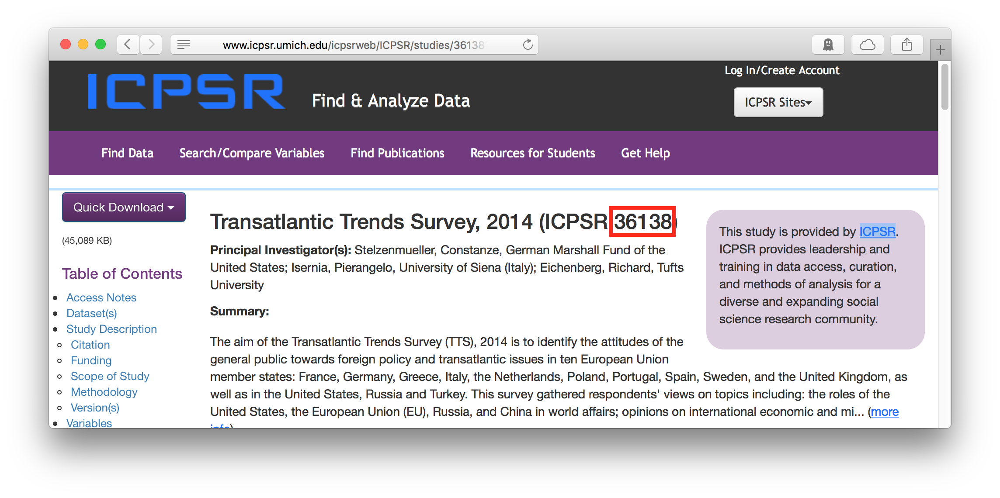

icpsrdata: Reproducible Data Retrieval from the ICPSR Archive
Frederick Solt
2023-07-05
Source:vignettes/icpsrdata-vignette.Rmd
icpsrdata-vignette.RmdThe Inter-university Consortium for Political and Social Research, in
its own words, “provides leadership and training in data access,
curation, and methods of analysis for the social science research
community.” The ICPSR data archive stores thousands of datasets on a
wide range of topics. Researchers taking advantage of these datasets,
however, are caught in a bind. The terms and conditions for downloading
any ICPSR dataset state that one agrees “not to redistribute data or
other materials without the written agreement of ICPSR.”1 But to ensure that
one’s work can be reproduced, assessed, and built upon by others, one
must provide access to the raw data one employed. The
icpsrdata package cuts this knot by providing programmatic,
reproducible access to ICPSR’s datasets from within R.
Setup
When used interactively, the icpsr_download function
will be ask for the login information required by ICPSR: the user’s
email and password. After that information is input once, it will be
entered automatically for any other download requests made in the same
session.
To change this contact information within a session, one may set the
argument reset to TRUE when running
icpsr_download again, and the function will again request
the required information.
An optional, but highly recommended, setup step is to add the login information ICPSR requires to your .Rprofile as in the following example:
options("icpsr_email" = "juanita-herrera@uppermidwest.edu",
"icpsr_password" = "password123!")The icpsr_download function will then access the
information it needs to pass on to ICPSR by default. This means that
researchers will not have to expose their info in their R scripts and
that others reproducing their results later will be able to execute
those R scripts without modification. (They will, however, need to enter
their own information into their own .Rprofiles, a detail that should be
noted in the reproducibility materials to avoid confusion.)
Use
The icpsr_download function (1) simulates a visit to the
website of the specified ICPSR dataset (2) enters the required
information and agrees to the terms and conditions of the download, (3)
downloads the dataset’s files, and, optionally but by default, (4)
decompresses the dataset’s files to a subdirectory within a specified
directory (or, by default, a icpsr_data directory in the
current working directory).
Datasets are specified using the file_id argument. ICPSR
uses a unique number to identify each of its datasets; this number is
consistently listed alongside the dataset’s name. For the 2014
Transatlantic Trends Survey, for example, the file id is 36138:

To reproducibly download this dataset:
icpsr_download(file_id = 36138,
download_dir = tempdir()) # remember to specify a directory for your downloadMultiple datasets may be downloaded from the same research area in a
single command by passing a vector of ids to file_id. The
following downloads the Transatlantic Trends surveys for 2012, 2013, and
2014:
icpsr_download(file_id = c(34715, 34973, 36138),
download_dir = tempdir()) # remember to specify a directory for your downloadAfter the needed datasets are downloaded, they are, by default,
unzipped and ready to be loaded into R using, e.g.,
rio::import.